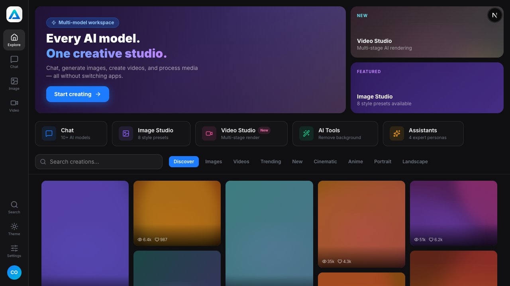
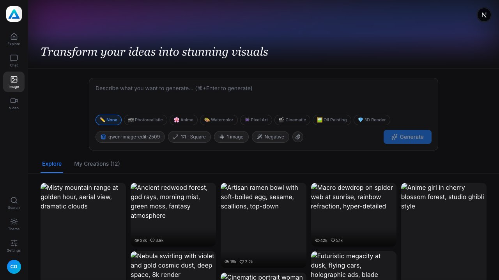
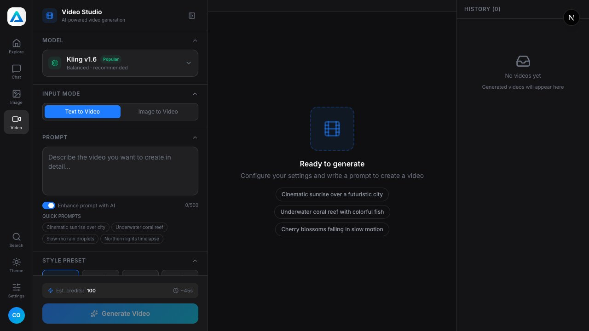
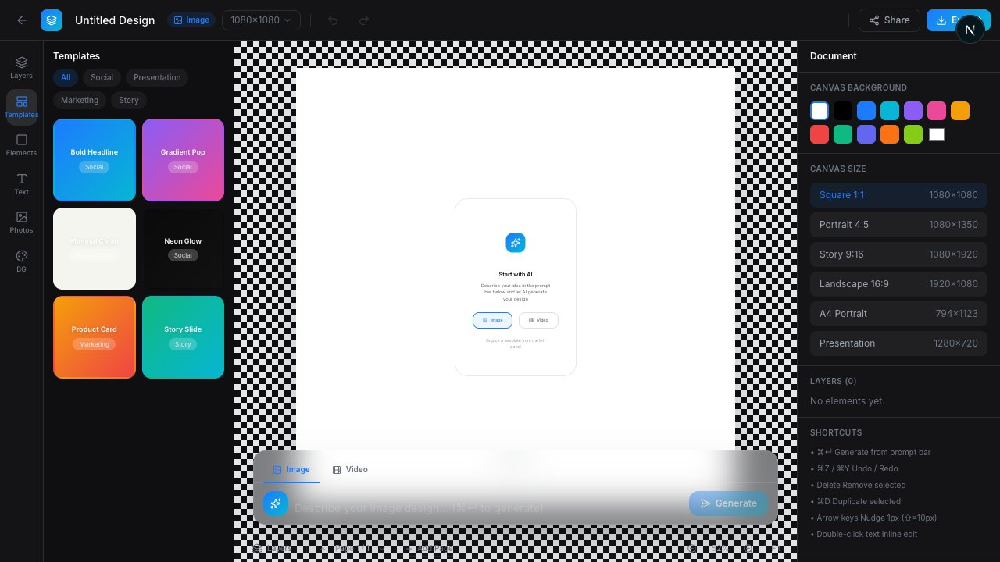

How I designed a unified AI creative platform that brings image generation, video creation, and design tooling into a single cohesive product experience — without overwhelming the user.




AnetAIS is a 0→1 AI creative studio product — a web application that unifies text-based chat, AI image generation, AI video generation, and a Canva/Figma-inspired design editor into one coherent platform. The product targets creators, marketers, and AI enthusiasts who currently juggle four or five separate tools to produce visual AI content.
Masonry explore gallery + prompt-based image generation with style presets, aspect ratio control, and masonry My Creations grid.
Multi-model video generation with camera motion presets, style presets, duration/FPS/aspect ratio controls, and a history library.
Full canvas editor inspired by Canva + Figma: layers panel, drag-and-drop elements, prompt-driven generation, and inline image/video output.
Creators who want to produce AI-generated visual content are forced to use multiple disconnected tools — Midjourney for images, Runway or Kling for video, Canva for design, ChatGPT for copy — with no unified history, no shared creative context, and no single output destination.
AI creative tools are powerful in isolation but broken as a workflow. There is no unified creative studio where a prompt becomes an image, then a video, then a designed artifact — without leaving the app.
Research was conducted across four methods to understand the creator workflow and identify gaps in existing tools.
| Feature | AnetAIS | Midjourney | Runway | Canva AI | Adobe Firefly |
|---|---|---|---|---|---|
| Image generation | ✓ | ✓ | ✗ | ✓ | ✓ |
| Video generation | ✓ | ✗ | ✓ | Partial | ✗ |
| Canvas / design editor | ✓ | ✗ | ✗ | ✓ | Partial |
| Explore / inspiration feed | ✓ | ✓ | ✗ | ✗ | ✗ |
| Prompt → image → video handoff | ✓ | ✗ | ✗ | ✗ | ✗ |
| Layers panel in editor | ✓ | ✗ | ✗ | ✓ | Partial |
| Dark mode | ✓ | ✓ | ✓ | ✗ | ✗ |
| Stage | Action | Thought | Emotion | Opportunity |
|---|---|---|---|---|
| Discover | Browses Explore page, sees trending images | "This style is exactly what my client wants." | 😊 Inspired | Rich detail modal with prompt + model info |
| Ideate | Clicks "Try in Design Studio" from modal | "I can remix this without starting from scratch." | 🚀 Excited | Auto-populate prompt in Design Studio |
| Generate | Adjusts prompt, chooses style preset, generates | "The generation overlay keeps me informed." | 😌 Patient | Stage-by-stage progress with time estimate |
| Edit | Adds text layer, reorders in layers panel | "I can see exactly what's on the canvas." | ✅ In control | Layers panel with drag reorder + rename |
| Export | Clicks Download, shares to client | "Done in one session." | 🎉 Satisfied | Download + Share CTAs in toolbar |
Intentionally removed from sidebar nav to prevent confusion — accessed only through "Try in Design Studio" CTA or clicking a My Creation. This reduces cognitive load on new users.
Profile panel floats from the avatar with credit bar, stats, and upgrade CTA — key actions without leaving the current tool. Full account management lives at /account.
7-section settings page: General, Appearance, Notifications, API Keys, Security, Usage & Credits, Plans — prevents scattered preference management.
The explore page is the first impression. I used CSS columns masonry layout (not CSS Grid) so images flow at their natural aspect ratios — creating a rich, Pinterest-style discovery experience without JavaScript masonry libraries.
Full-screen canvas editor accessible only through explicit user intent (via "Try in Design Studio" CTA). Key design decisions:
Most video generation tools expose raw sliders. AnetAIS replaces these with opinionated preset grids that communicate visually what each option does:
Each with name, badge (Latest/Popular/Fast), and sub-description — helps non-technical users choose confidently.
Visual icon grid (Static, Pan L/R, Tilt U/D, Zoom In/Out, Orbit, Dolly, Handheld) with tooltip descriptions. Motion strength slider appears only when a motion is selected.
Dynamic cost and time preview before generating — sets expectations and reduces frustration when results take time.
"I kept looking for a 'Design' button in the sidebar." — Tester #2
"It covered my canvas and I didn't know where to click." — Tester #5
The popup used absolute positioning relative to sidebar, not viewport.
"I want to see what model and settings made this." — Tester #4
Users expected the full canvas editor, not a minimal overlay.
Access gated to "Try in Design Studio" CTA in detail modal and My Creations click — enforces intentional flow, reduces confusion.
Layers button in bottom bar toggles the left sidebar panel between Templates and Layers — no floating overlay, no canvas obstruction.
Changed from absolute to fixed left-[72px] bottom-4 — always visible, never clipped.
Added: model cards with tier badges, collapsible generation params, comment section, sticky Generate Video + Design Studio CTAs.
Click on any creation card in My Creations tab now navigates directly to Design Studio with prompt pre-filled.
AnetAIS v1.0 ships as a unified 5-route web application with a global 72px icon sidebar, dark/light theme, and three interconnected creative studios that share a common prompt-to-output philosophy.
Masonry CSS columns gallery with 9 filter tabs, search, and rich detail modal. The inspiration layer that feeds users into the creation funnel.
Prompt input with style presets, aspect ratios, model selector, and My Creations masonry grid that routes to Design Studio on click.
5 models, 8 style presets, 10 camera motions, duration + FPS controls, advanced settings, full video player with seekbar, and history library panel.
Full canvas editor with layers panel (drag-reorder, rename, right-click context), templates, element types, floating AI prompt bar for image/video generation inline.